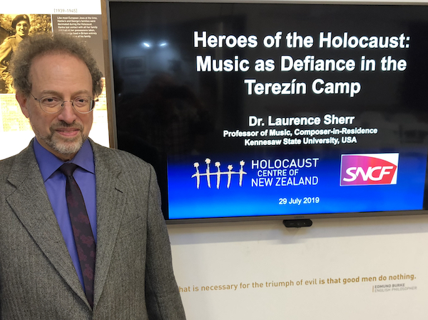

|
||||||
| HOME | CREDITS | FEEDBACK PAGE | SITEMAP | |||
Composition and Lecture Notes
Sherr NotesSherr is active as a composer of Holocaust remembrance music, lecturer on Holocaust music topics, producer of remembrance events, and Holocaust music educator. Performances and lectures have been given in the Czech Republic, Germany, Poland, England, Norway, Italy, Israel, Australia, New Zealand, and across North America. The poetry of Holocaust survivor and Nobel laureate Nelly Sachs is featured in two of his compositions. His Sonata for Cello and Piano–Mir zaynen do! integrates Holocaust songs from the partisans, ghettos, and camps (see The Investigator Research Magazine profile). Sherr’s mother was Alice Bacharach Sherr (1931–2009), a Holocaust survivor from Germany; his concert and educational activities in the German town where his mother and her family were persecuted led to reconciliation and healing (see Duke Magazine profile). Through international lectures about his music, Holocaust music topics, and the pedagogy he developed for teaching the Holocaust through music, Sherr is dedicated to fostering greater awareness and tolerance (see
KSU Magazine profile). His Music of Resistance and Survival Project, which features his cello sonata, connects audiences with the lost and forbidden voices of Holocaust song creators. He developed the global citizenship course “Music and the Holocaust” at Kennesaw State University, for which he compiled a list of reference materials at Resources: Music and the Holocaust. |
 |
Composition
Holocaust Remembrance Works
Music of Resistance and Survival Project
|
LecturesVideos: Concerts with Commentary, Lectures with PerformancesLectures: complete list and descriptions Audiences on four continents have acclaimed Dr. Sherr's engaging events that combine music performances and lectures. Meaningful music is enriched by edifying content in his concerts with commentary, lectures with performances, and lectures prefacing performances. Stand-alone lectures are also an option. Invitations to present these have come from universities, conservatories, schools, museums, national and international conferences, synagogues, concert organizations, and civic groups in the US, Europe, the Middle East, the Caribbean, and Australasia. All of Sherr’s lectures include media-rich slide presentations, and his Holocaust music research is often featured. For example, his lectures on music at the Auschwitz and Theresienstadt camps include his on-site photo and video documentation, interviews with survivors who performed in the camps, and archival materials. A unique program is his Music of Resistance and Survival Project, whose modular components include public and student concerts with commentary. These are supplemented by online educational materials and teacher's guides. Sample lecture titles: • "Music at Auschwitz: Aid to Survival or Dehumanizing Degradation?" • "Suppressed Music and Art during the Nazi Era" • "Heroes of the Holocaust: Music as Defiance in the Terezín Camp" |